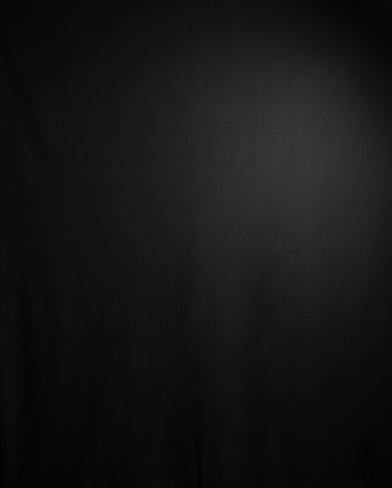

Selecciona un ave en el menú superior
para visualizar su modelo 3D
interactivo
🖱️ Arrastra para rotar · 🔍 Rueda para zoom · 📱 Pellizca para escalar


Cargando modelo…
🖱️ Clic + arrastrar: rotar
🖱️ Botón derecho + arrastrar: desplazar
⚙️ Rueda: zoom
📱 Un dedo: rotar · Dos dedos: zoom